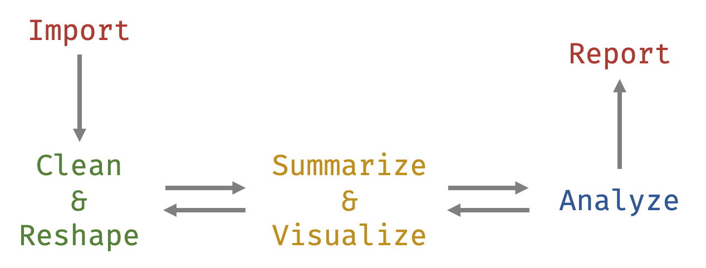
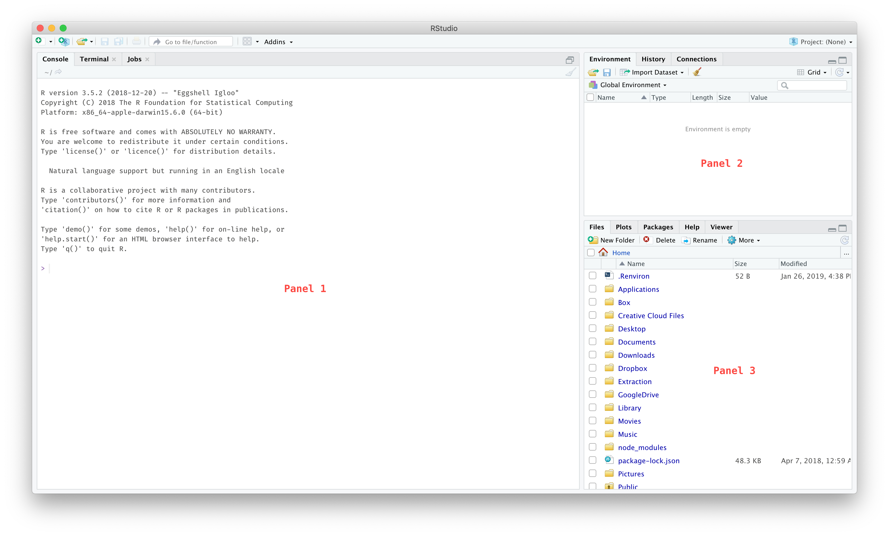

R for Researchers: An Introduction
2019-05-13
Preface
Welcome to R for Researchers: An Introduction! This book is designed to help you learn to use R and RStudio for working with and analyzing your data. This book is written for researchers in what I’m calling the human sciences—the sciences dealing directly with human well-being (e.g. health, behavior, education, psychology, and sociology). Although different in substantive interests, the data situations faced, and analysis approaches used, in these fields are similar. As such, the topics addressed should be useful for researchers working with quantitative data in each of these areas.
My approach herein does not focus on the theoretical aspects of statistics or data science. Instead, it focuses on the application of the methods necessary for a researcher in the humans sciences to independently work with and analyze human data.
This book can work as a companion to other statistical texts or can be a standalone text for learning R. As a companion, Part II (explained below) can be particularly helpful getting started using R for statistical analyses. As a standalone, the entire book helps a researcher work with data throughout the “data analysis lifecycle”—from importing, cleaning, and summarizing the data to analyzing and reporting the results (see figure below).

Preparation
Before beginning the book, you will need to download the R software www.r-project.org and then the RStudio software www.rstudio.com. R will just need to be installed on your computer but you won’t interact with it directly (you won’t need to open it up). RStudio1 is actually how we will end up using R. You can think of R as the computer processor while RStudio is the keyboard and screen. R actually does the work but you’ll only use it by using RStudio.
Once they are both installed, when you open up RStudio you should see the following three panels:

If you do, then congrats! You are one huge step on the path to using R in your research. If it isn’t going so smoothly, helps on installing the software can be found on www.rstudio.com, www.r-bloggers.com, and www.statmethods.net. Don’t give up it if you run into any obstacles here. But once it is installed and you can open RStudio, you are good to go. The remainder of the book will be about actually using it (the fun part!).
In general, I will refer to anything you do in
RStudioas usingR. So, when I say things like: “To make a plot inR, we are going to …”, I do not mean to openRand start doing stuff there. Instead, I mean to keep usingRStudiobut will not refer to the things we do as inRStudiobut as inR.
The book is divided into three parts.
Part I
- Chapter 1: The Basics
- Chapter 2: Working with and Cleaning Your Data
- Chapter 3: Understanding Your Data (summary statistics, ggplot2)
Part II
- Chapter 4: Basic Statistical Analyses (T-tests, ANOVA, Linear Regression)
- Chapter 5: Generalized Linear Models
- Chapter 6: Multilevel Modeling
- Chapter 7: Other Modeling Techniques
Part III
- Chapter 8: Advanced data manipulation
- Chapter 9: Reproducible Workflow
- Chapter 10: Where to go from here
At the end of the book, you should be able to: 1) use R to perform your data cleaning and data analyses and 2) understand online helps (e.g. www.stackoverflow.com, www.r-bloggers.com) so your potential in R becomes nearly limitless.
Enjoy!2